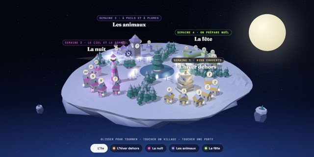
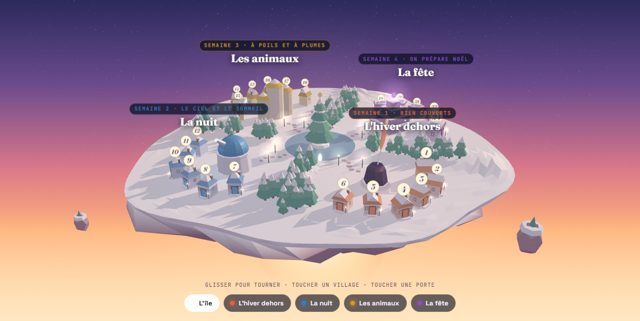
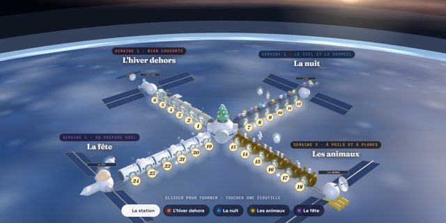
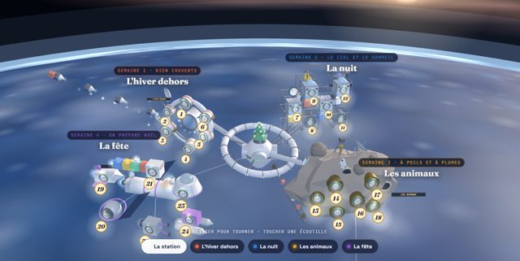
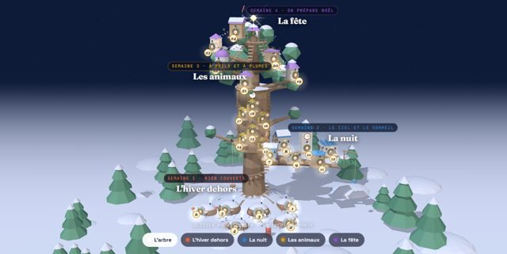
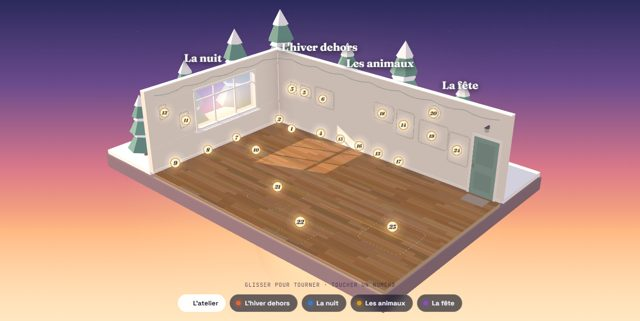
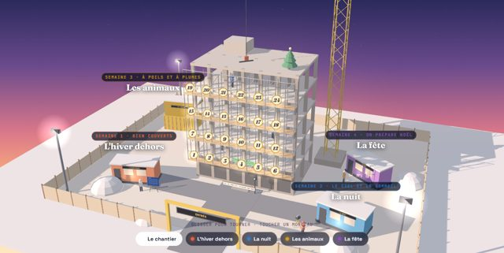
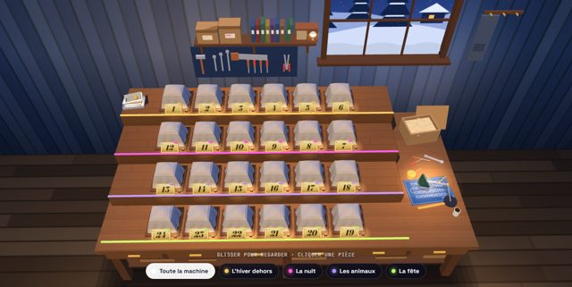

Du 1er au 24 décembre, une fenêtre s'ouvre chaque jour : derrière, un mot, en français, en anglais, en allemand, en luxembourgeois et en chinois, à écouter. Les mêmes mots dans chaque calendrier : choisis ton monde.

L'île Quatre villages sur une île, une porte par jour.
L'île du matin La même île au lever du jour, d'autres maisons.
La station spatiale Vingt-quatre modules dans l'espace, une écoutille par jour.
La station en vrac Des modules de toutes les tailles, accrochés n'importe comment.
L'arbre Un village dans un grand arbre, une porte par jour.
L'atelier Un atelier qui grandit un peu chaque jour.
Le chantier Une maison se construit, un morceau par jour.
La machine Une grande machine, une pièce de plus chaque jour.Les mots viennent de l'Île aux Mots ; la prononciation luxembourgeoise, de lod.lu.